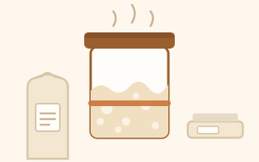

About Snow
Where this particular jar of flour and water came from, what it has been living on, and why the thing in your packet deserves a name of its own.

Who Snow is
Snow came to me through a sourdough workshop in town, taught by a Portuguese baker who sent everyone home with a jar and a student guide. The feeding ratios, the loaf and the general approach on this site are all from that day, written up here in my own words.
My daughter named it. Not after anything clever - it is pale, and it sits in a jar looking like weather. That is the whole etymology, and I think it is the right amount of thought to give it.
It lives on King Arthur bread flour at 100 % hydration, which is simply what I happened to buy and then kept buying. If you want to match how it has been living, use that. If you have something else unbleached, it will adapt within a couple of feeds and never mention it again.
What it actually is
Flour and water hosting a stable community of wild yeast and lactic acid bacteria. The yeast makes the gas that lifts your bread. The bacteria make the acids that give it flavour and keep unwanted microbes out. Your job is to feed them regularly and keep them warm enough to work. That is genuinely all there is to it.
How it has travelled
A Portuguese baker, to a workshop in town, to my kitchen, to a tray of flakes drying on baking parchment, to a paper packet on a table at Teams Week, to you. Every one of those steps cost the giver nothing - you divide a starter and both of you still have the whole thing, which is a rare property for a gift.
The jar you grow from those flakes is genuinely continuous with the one on my counter. Feed it in your kitchen, with your flour and your water, and within a few weeks it will start behaving slightly differently from mine. Same culture, different accent.
Give it a name
This is not whimsy for its own sake. A named starter gets fed. "The jar" gets forgotten at the back of the fridge behind a jar of olives, and a surprising number of cultures die of exactly that. Naming it makes it a small responsibility rather than an ingredient, and responsibilities get remembered.
It also makes it much easier to tell someone your starter has done something alarming.
Stuck? Press the button.
What makes a good starter name
- Say it out loud first. You will be saying "I need to feed <name>" in front of other people for years.
- Treat it as a pet, not a product. Names that sound like a brand age badly. Names that sound like a slightly difficult housemate age well.
- Let a child name it if there is one available. They are better at this than adults and they will not overthink it.
- Lean into the sourness. Half the best starter names are mildly insulting, and the starter does not mind.
- Write it on the jar. A name that only lives in your head does not do the job that names are for.
Or get an assistant to do it
Paste this into Copilot. Change the first three lines and leave the rest, which is what keeps the output from sounding like a brand consultancy.
Then tell me what you called it
I am keeping an informal list of where Snow has ended up and what it is called now. Drop me a line - a name and a photo of your first loaf is plenty. If you pass the flakes on again, the next person is free to rename it entirely.